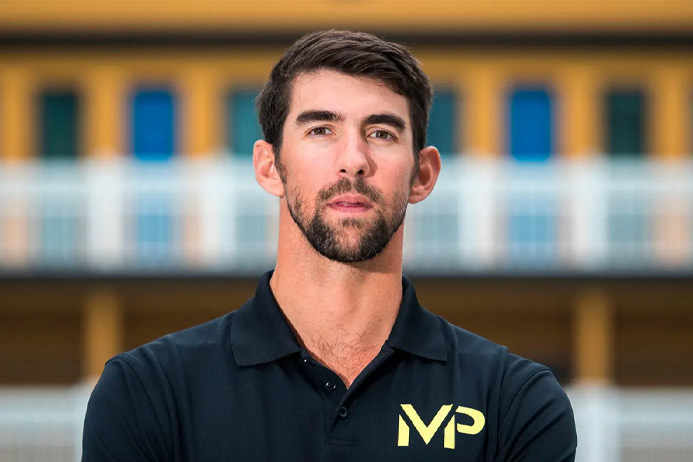
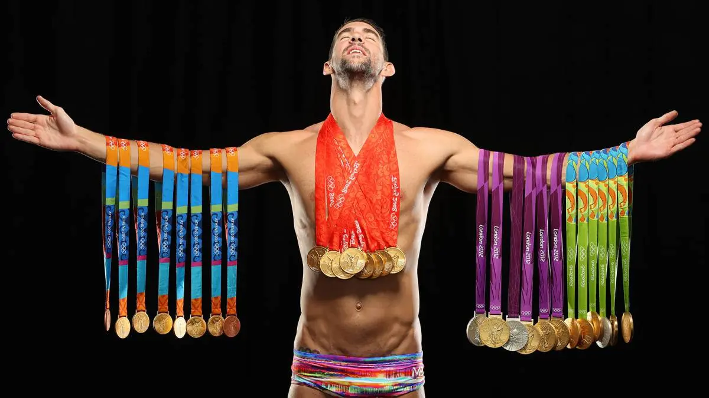
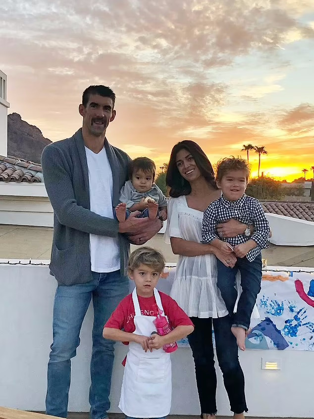
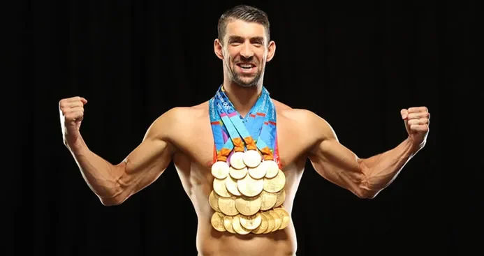
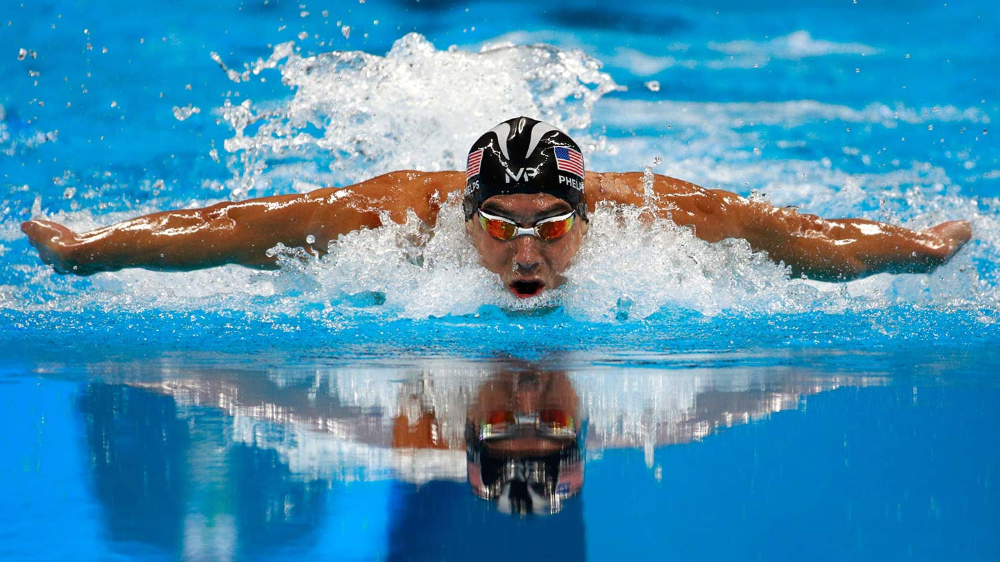

بیوگرافی مایکل فلپس
مایکل فلپس (Michael Phelps)، یکی از بزرگترین قهرمانان تاریخ شنا و از معروفترین ورزشکاران جهان، در تاریخ 30 ژوئن 1985 در بالتیمور، مریلند، ایالات متحده آمریکا متولد شد. او به عنوان یکی از پرافتخارترین و موفقترین شناگران تاریخ ورزش شنا شناخته میشود. در این مقاله، به بررسی زندگی نامه و دستاوردهای برجسته مایکل فلپس میپردازیم.
مایکل فلپس در یک خانواده ورزشی به دنیا آمد. پدر و مادر او هر دو از سابقه ورزشی قوی برخوردار بودند. وی در سنین کودکی به شنا علاقه مند شد و در سن 7 سالگی به عنوان یک شناگر نوپای در کلوب بالتیمور آغاز به تمرین کرد. از آن زمان، با تلاش های پیوسته و تمرینات سخت، توانست به سرعت به یکی از توانمندترین ورزشکاران جهان تبدیل شود.

جوایز و افتخارات مایکل فلپس در شنا
مایکل فیلیپس در طول دوره حرفهای خود، دستاوردهای فراوانی کسب کرده است. او در المپیک های تابستانی 2004 در آتن، 2008 در بکین، 2012 در لندن و 2016 در ریو دو ژانیرو شرکت کرد و مجموعا 23 مدال طلا، 3 مدال نقره و 2 مدال برنز را به خانه برد. او به عنوان اولین ورزشکاری تاریخ شنا شناخته میشود که 23 مدال طلا المپیکی را کسب کرده است.
در ادامه لیست مدال های مایکل فلپس را مشاهده میکنید؛
- المپیک تابستانی 2004 – آتن:
مدال طلا: 6 مدال (200 متر فرنسی، 100 متر فرنسی، 200 متر پروانه، 200 متر قورباغه، 200 متر مدلی و مدل تیمی پیروی)
مدال برنز: 2 مدال (100 متر پروانه و 4×100 متر مدلی تیمی پیروی)
- المپیک تابستانی 2008 – بکین:
مدال طلا: 8 مدل(400 متر پروانه، 4×100 متر مدلی تیمی پیروی، 200 متر پروانه، 200 متر قورباغه، 200 متر مدلی، 100 متر پروانه، 4×200
متر آزاد، 4×100 متر مدلی تیمی پیروی)
- المپیک تابستانی 2012 – لندن:
مدال طلا: 4 مدال (100 متر پروانه، 200 متر پروانه، 4×200 متر آزاد، 4×100 متر مدلی تیمی پیروی)
مدال نقره: 2 مدال (200 متر قورباغه و 4×100 متر مدلی تیمی پیروی)
- المپیک تابستانی 2016 – ریو دو ژانیرو:
مدال طلا: 5 مدال (200 متر پروانه، 200 متر قورباغه، 4×200 متر آزاد، 4×100 متر مدلی تیمی پیروی، 4×100 متر مدلی تیمی کراول)
مدال نقره: 1 مدال (100 متر پروانه)
مدال برنز: 1 مدال (100 متر مدلی)

حواشی زندگی مایکل فلپس
زندگی مایکل فیلیپس همچون دیگر ورزشکاران معروف، با حواشی و مشکلاتی نیز همراه بوده است.
یکی از بزرگترین حواشی در زندگی مایکل فلپس، مصرف مواد مخدر است. در سال 2009، تصاویری از او در حال استفاده از یک ماده مخدر منتشر شد و این موضوع بسیار برای او تبلیغات منفی داشت. او پس از این حادثه عذرخواهی کرد و به درمان مشکلات اعتیادی خود پرداخت.
در سال 2014، مایکل فلپس به دلیل رانندگی در وضعیت مست با مشکلات حقوقی روبرو شد که تعلیق وی از تیم شنا را در پی داشت! البته او در سال 2015 مجددا پس از رهایی از دام تعقیبات قانونی تمرینات شنا را آغاز کرد.
زندگی خصوصی مایکل فلپس نیز همیشه تحت توجه رسانه ها بوده است. ازدواج و جدایی ها، روابط عاطفی و حواشی خانوادگی او در برخی موارد به موضوعات عمومی تبدیل شده و در رسانه ها گزارش شده است.
مایکل فلپس مشکلات روانی مختلفی هم تجربه کرده و در برخی مصاحبه ها به مشکلات اضطراب و افسردگی خود اشاره کرده است. او تاکید دارد که شنا و ورزش برای او به عنوان یک راهحل در مقابل این مشکلات عمل کرده است.
با این وجود، این قهرمان شنا توانست با تلاش و تصمیم به اصلاح رفتارهای خود و پشتیبانی از خانواده و دوستانش، از مشکلاتش عبور کند و دوباره به مسیر موفقیت بازگردد. او به عنوان یک نمونهای از قدرت ترمیم و تغییر در زندگی شناخته میشود.
در سال 2016، پس از المپیک ریو دو ژانیرو، مایکل فلپس بازنشستگی خود را اعلام کرد. او به عنوان یکی از بزرگترین و موفقترین ورزشکاران تاریخ به یادگار ماند و به جامعه ورزش جهانی انگیزه و الهام بخشی فراوان داد.

فعالیت های انسان دوستانه مایکل فلپس
مایکل فلپس، علاوه بر دستاوردهای برجسته در شنا، به عنوان یک فعال انسان دوستانه نیز شناخته میشود. او در طول مسیر حرفهای خود به فعالیت های مختلف انسان دوستانه مشغول بوده و تلاش کرده است تا به جوانان و افراد دیگر در جامعه کمک کند. در زیر به برخی از این فعالیت ها اشاره خواهیم کرد:
✅ مؤسسه مایکل فلپس (The Michael Phelps Foundation): این ورزشکار بزرگ در سال 2008، بنیانگذار مؤسسه مایکل فلپس شد. این مؤسسه به ارتقاء شنا و آموزش آبی ورزشی به جوانان علاقمند میپردازد. هدف اصلی این مؤسسه ارتقاء سلامتی جسمی و روحی افراد از طریق ورزش و شنا است.
✅ برنامههای آموزشی ورزشی: مایکل فلپس به صورت مکرر در برنامه ها و فعالیت های آموزشی ورزشی برای کودکان و نوجوانان شرکت کرده و همچنین به عنوان مربی و مشاور در ارتقاء مهارت های شنا و ورزش به جوانان به عنوان یک نمونه موفقیت خدمت میکند.
✅ کمک به کودکان محروم: مایکل فلپس و همسرش، نیکول جانسون، بخشی از درآمد و وقت خود را به فعالیت های خیریه و کمک به کودکان محروم و نیازمند اختصاص داده اند. آن ها به صورت مکرر به بیمارستان ها و مراکز اجتماعی میروند و کمک های مالی و معنوی ارائه میدهند.
✅ کمک به مبارزه با اعتیاد: مایکل فلپس به عنوان یک فردی که با مشکلات مرتبط با مصرف مواد مخدر روبرو شده است، به مبارزه با اعتیاد و آگاهی از این موضوع میپردازد. او در مصاحبه ها و برنامه های تلویزیونی درباره تجربیات شخصی خود در این زمینه صحبت کرده و در کنار آن به بسیاری از بیمارانی که در دام اعتیاد هستند کمک کرده است.

جمعبندی
مایکل فلپس، یکی از بزرگترین ورزشکاران تاریخ و یک آیکون شنا جهان است. او با استعداد طبیعی و تمرینات سخت، به دستاوردهای بینظیر در دنیای شنا دست یافت و به عنوان یک نماد ورزشی و الهامبخش برای نسل های آتی تجلیل میشود. زندگی نامهاش نمونهای از تعهد، تلاش و توانمندی در ورزش است و همین باعث شده تا او در تاریخ ورزش جهانی به عنوان یکی از بهترینها شناخته شود.
برو به گوگل